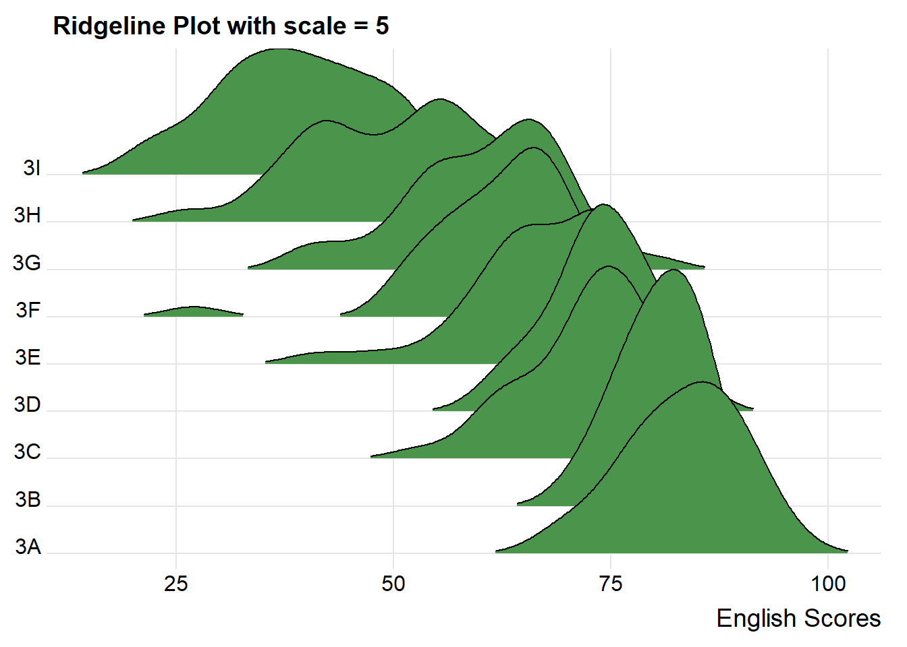
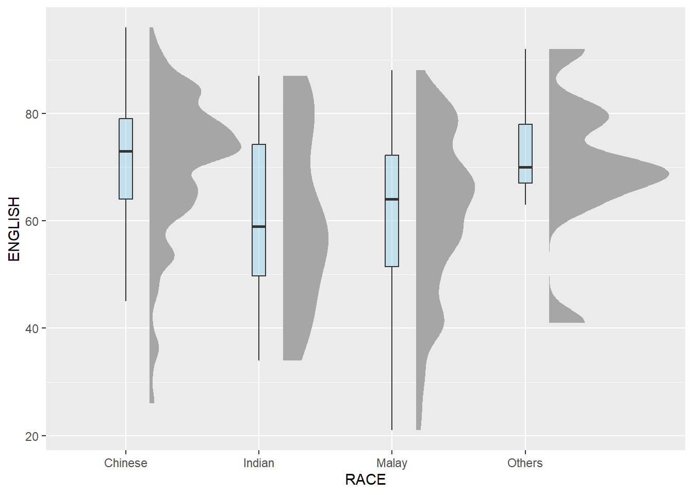

Show the code
pacman::p_load(tidyverse, ggridges, ggdist, DT, colorspace, ggthemes)In hands-on exercise 1, we have learnt how to visualise distributions using popular statistical graphics methods such as histogram, probability density curve (pdf), box plot, notch plot and violin plot, and how they can be created using ggplot2. In this hands-on exercise, we will learn about two relatively new statistical graphic methods to visualise distributions: ridgepline plot and raincloud plot.
Before we start, let us ensure that the required R packages have been installed and import the relevant data for this hands-on exercise.
For this exercise, other than tidyverse, we will use the following packages:
tidyverse: a family of R packages for data science process
ggridges: a ggplot2 extension specially designed for plotting ridgeline plots
ggdist: a package to visualise distribution and uncertainty.
DT: to create interactive tables using the JavaScript library DataTables
The code chunk below uses p_load() of pacman package to check if the abovementioned packages are installed in the computer. If they are, they will be launched in R. Otherwise, pacman will install the relevant packages before launching them.
pacman::p_load(tidyverse, ggridges, ggdist, DT, colorspace, ggthemes)For this exercise, we will be using the Exam_data.csv provided by the course instructor and we have used it in Hands-on Exercises 1 and 2. It consists of year end examination grades of a cohort of primary 3 students from a local school. It is in csv file format.
We use read_csv() function of readr to import the Exam_data csv file into R and save it as a tibble data frame called exam_data. Then we will use datatable() of DT to have an overview of the imported data.
exam_data <- read_csv("data/Exam_data.csv")
datatable(exam_data, caption= "Table 1: Exam Data of Primary 3 Students")Ridgeline plot (sometimes called Joyplot) is a data visualisation technique for revealing the distribution of a numeric value for several groups. Distribution can be represented using histograms or density plots, all aligned to the same horizontal scale and presented with a slight overlap.
There are several ways to plot ridgeline plot with R. In this exercise, we will learn how to plot ridgeline plot using ggridges package.
ggridges package provides two main geom to plot gridgeline plots, they are: - geom_ridgeline(): takes height values directly to draw the ridgelines
- geom_density_ridges(): first estimates data densities and then draws those using ridgelines.
Ridgeline plots make sense when the number of group to represent is medium to high, since a classic window separation would take too much space. As ridgeline plots allow groups to overlap each other, it allows more efficient use of space. If we have less than 5 groups, dealing with other distribution plots is probably better.
Also, ridgeline plots work well when there is a clear pattern in the result. For example, an obvious ranking in groups. Otherwise, groups will tned to overlap each other, leading to a messy plot and not providing any insight.
The following code chunk plots the distribution of Primary 3 students’ English scores using geom_density_ridges().
When geom_density_ridges() is used, the height aesthetic does not need to be specified. However, height needs to be specified when geom_ridgeline is used.
There is also geom_density_ridges2(), which is identical to geom_density_ridges() except it uses closed polygons instead of ridgelines for drawing.
The group() aesthetic does not need to be provided if a categorical variable is mapped onto the y axis, but it does need to be provided if the variable is numerical.
ggplot(exam_data, aes(x = ENGLISH, y = CLASS))+
geom_density_ridges(
scale = 3,
rel_min_height = 0.01,
bandwidth = 3.4,
fill = lighten("darkgreen", 0.3),
color = "black"
) +
scale_x_continuous(name = "English Scores",
expand = c(0,0)) +
scale_y_discrete(name = NULL, expand = expansion(add = c(0.2,2.6))) +
theme_ridges() + labs(title = "Ridgeline Plot with scale = 3")
The overlapping of the density plot can be controlled by adjusting the value of scale. Scale defines how much the peak of the lower curve touches the curve above.
A setting of scale=1 means the tallest density curve just touches the baseline of the next higher one. Smaller values create a separation between the curves, and larger values create more overlap.
ggplot(exam_data, aes(x = ENGLISH, y = CLASS))+
geom_density_ridges(
scale = 5,
rel_min_height = 0.01,
bandwidth = 3.4,
fill = lighten("darkgreen", 0.3),
color = "black"
) +
scale_x_continuous(name = "English Scores",
expand = c(0,0)) +
scale_y_discrete(name = NULL, expand = expansion(add = c(0.2,2.6))) +
theme_ridges() + labs(title = "Ridgeline Plot with scale = 5")
Sometimes we would like to have the area under a ridgeline filled with colors that vary in some form along the x axis. This effect can be achieved by using either geom_ridgeline_gradient() or geom_density_ridges_gradient(). Both geoms work just like geom_ridgeline() and geom_density_ridges(), except that they allow for varying fill colors. However, they do not allow for alpha transparency in the fill. For technical reasons, we can have changing fill colors or transparency but not both.
ggplot(exam_data, aes(x = ENGLISH, y = CLASS, fill = stat(x))) +
geom_density_ridges_gradient(
scale = 3,
rel_min_height = 0.01) +
scale_fill_viridis_c(name = "Scores", option = "C") +
scale_x_continuous(name = "English Scores",
expand = c(0,0)) +
scale_y_discrete(name = NULL, expand = expansion(add = c(0.2, 2.6))) +
theme_ridges()
Besides providing additional geom objects to support the need to plot ridgeline plot, ggridges package also provides a stat function called stat_density_ridges() that replaces stat_density() of ggplot2.
We can map the probabilities calculated using stat(ecdf) which represents the empirical cumulative density function for the distribution of English Scores.
ggplot(exam_data,
aes(x = ENGLISH,
y = CLASS,
fill = 0.5 - abs(0.5-stat(ecdf)))) +
stat_density_ridges(geom = "density_ridges_gradient",
calc_ecdf = TRUE) +
scale_fill_viridis_c(name = "Tail probability",
direction = -1) +
theme_ridges()
It is important include the argument calc_ecdf = TRUE in stat_density_ridges().
Using geom_density_ridges_gradient, we can colour the ridgeline plot by quantile via the calculated stat(quantile) aesthetic as shown in the following code chunk.
ggplot(exam_data, aes(x = ENGLISH, y = CLASS, fill = factor(stat(quantile)))) +
stat_density_ridges(
geom = "density_ridges_gradient",
calc_ecdf = TRUE,
quantiles = 4,
quantile_lines = TRUE) +
scale_fill_viridis_d(name = "Quartiles") +
theme_ridges()
Instead of using number to define the quantiles, we can also specify quantiles by cut points such as 2.5% and 97.5% tails to colour the ridgeline plot as shown in following code chunk.
ggplot(exam_data,
aes(x = ENGLISH,
y = CLASS,
fill = factor(stat(quantile))
)) +
stat_density_ridges(
geom = "density_ridges_gradient",
calc_ecdf = TRUE,
quantiles = c(0.025, 0.975)
) +
scale_fill_manual(
name = "Probability",
values = c("#FF0000A0", "#A0A0A0A0", "#0000FFA0"),
labels = c("(0, 0.025]", "(0.025, 0.975]", "(0.975, 1]")
) +
theme_ridges()
Raincloud Plot is a data visualisation techniques that produces a half-density to a distribution plot. It gets the name because the density plot is in the shape of a “raincloud”. The raincloud (half-density) plot enhances the traditional box-plot by highlighting multiple modalities (an indicator that groups may exist). The boxplot does not show where densities are clustered, but the raincloud plot does!
To plot a raincloud plot, first we will plot a half-eye graph using stat_halfeye() of ggdist package. This produces a Half Eye visualization, which is contains a half-density and a slab-interval.
:::{.panel-tabset}
ggplot(exam_data,
aes(x = RACE,
y = ENGLISH)) +
stat_halfeye(adjust = 0.5,
justification = -0.2,
.width = 0,
point_colour = NA)
Note: We remove the slab interval by setting .width = 0and point_colour = NA.
ggplot(exam_data,
aes(x = RACE,
y = ENGLISH)) +
stat_halfeye(adjust = 0.5,
justification = -0.2,
.width = 0.5,
point_colour = "blue")
Next, we will add the second geometry layer using geom_boxplot() of ggplot2. This produces a narrow boxplot. We reduce the width and adjust the opacity.
ggplot(exam_data,
aes(x = RACE,
y = ENGLISH)) +
stat_halfeye(adjust = 0.5,
justification = -0.2,
.width = 0,
point_colour = NA) +
geom_boxplot(width = .10,
outlier.shape = NA,
fill = "skyblue", alpha = 0.4)
Next, we will add the third geometry layer using stat_dots() of ggdist package. This produces a half-dotplot, which is similar to a histogram that indicates the number of samples (number of dots) in each bin. We select side = “left” to indicate we want it on the left-hand side.
ggplot(exam_data,
aes(x = RACE,
y = ENGLISH)) +
stat_halfeye(adjust = 0.5,
justification = -0.2,
.width = 0,
point_colour = NA) +
geom_boxplot(width = .20,
outlier.shape = NA) +
stat_dots(side = "left",
justification = 1.2,
binwidth = .5,
dotsize = 2)
Lastly, we will flip the raincloud chart horizontally using coord_flip() to give it a raincloud appearance. We will also add theme_economist() of ggthemes package to give the raincloud chart a professional publishing standard look.
ggplot(exam_data,
aes(x = RACE,
y = ENGLISH)) +
stat_halfeye(adjust = 0.5,
justification = -0.2,
.width = 0,
point_colour = NA) +
geom_boxplot(width = .20,
outlier.shape = NA) +
stat_dots(side = "left",
justification = 1.2,
binwidth = .5,
dotsize = 2)+
coord_flip() + theme_economist()
Kam, T. S. (2023). R for Visual Analytics [Web-book]. https://r4va.netlify.app/.